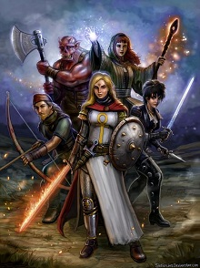

Adventurers Wanted
Greetings traveler are you looking to earn some coin and glory? Or are you looking to amass power to rival kings and the very gods? Well, we have a job for you that will help you along your path. Though first what flavor of combat do you prefer?
Combat Paths
D&D is a game with many facets though at its heart its about roleplay and turn based combat. In this section we will break down the three main combat styles and help you determine from there which class might suite you the best.
Martial Classes
These classes forgo magic in exchange for physical strength or high dexterity. They excel at being able to tank hits and have high health. The classes that fall into this category are the rouge, fighter, barbarian, and monk. Fighters can be setup to use either strength or dexterity as their main stat. Though for rogue and monk dexterity will be your main stat and strength is much less vital. Lastly barbarians focus on strength to wield heavy weapons and deal out punishing blows to enemies using their rage.
Caster Classes
These Classes focus primarily on mastering magic to fight their battles. They excel at being heavy hitters and can use their spells to serve as an arcane Swiss army knife by having a spell to solve most situations from surviving a high fall to teleporting or creating food / shelter. The classes that fit this role are the wizards, druids, sorcerers, and clerics. Unlike martial classes their stats are less homogenous, so I'll cover recommendations individually in their sections.
Half Casters
These are hybrid classes that focus on merging the arcane and martial. They include bards, rangers, paladins, and warlocks. These classes main stat is charisma so they often can end up as the face of the party. This is the member who does the wheeling and dealing with the public and typically rolls the big attempts to convince an NPC. The exception to this is the ranger. They focus on dexterity to either focus on the bow or dual wielding weapons. Since charisma isn't a key stat they typically lean more to being a damage dealer rather than mastering social interactions.
Stats
Above I have mentioned key stats for the various classes. I realize that if you are new to the hobby these can seem vague at first glance so here is a breakdown of each and what they affect in general terms. Roll20.net has a longer breakdown avialable for those who want to go more in depth than what I cover here.
- Strength
- Affects how well you can do with melee weapons and thrown weapons. This stat is key for barbarians and potentially for fighters as well.
- Dexterity
- Affects how well you do with finesse weapons and bows. Finesse weapons include rapiers and daggers. Dexterity also makes you harder to hit (increases AC) when you are wearing medium, light or no armor. This stat is key for rogues, rangers, monks and potentially fighters.
- Constitution
- This is a measure of your general health and is used to increase your total health points each time you level up or to restore health upon short rests.
- Intelligence
- This is a measure of your book smarts. It also used to affect casting for wizards.
- Wisdom
- This is a measure of your character's ability to apply the knowledge they have and predict the consequences of their actions. For example an high intelligence person could invent a powerful weapons. A wise person can forsee the downsides of such an invention. This is also used to affect casting for druids, sorcerers, paladins, and clerics.
- Charisma
- This is a measure of how gilded a tongue your character has. This is used primarily by warlocks, bards, and paladins.